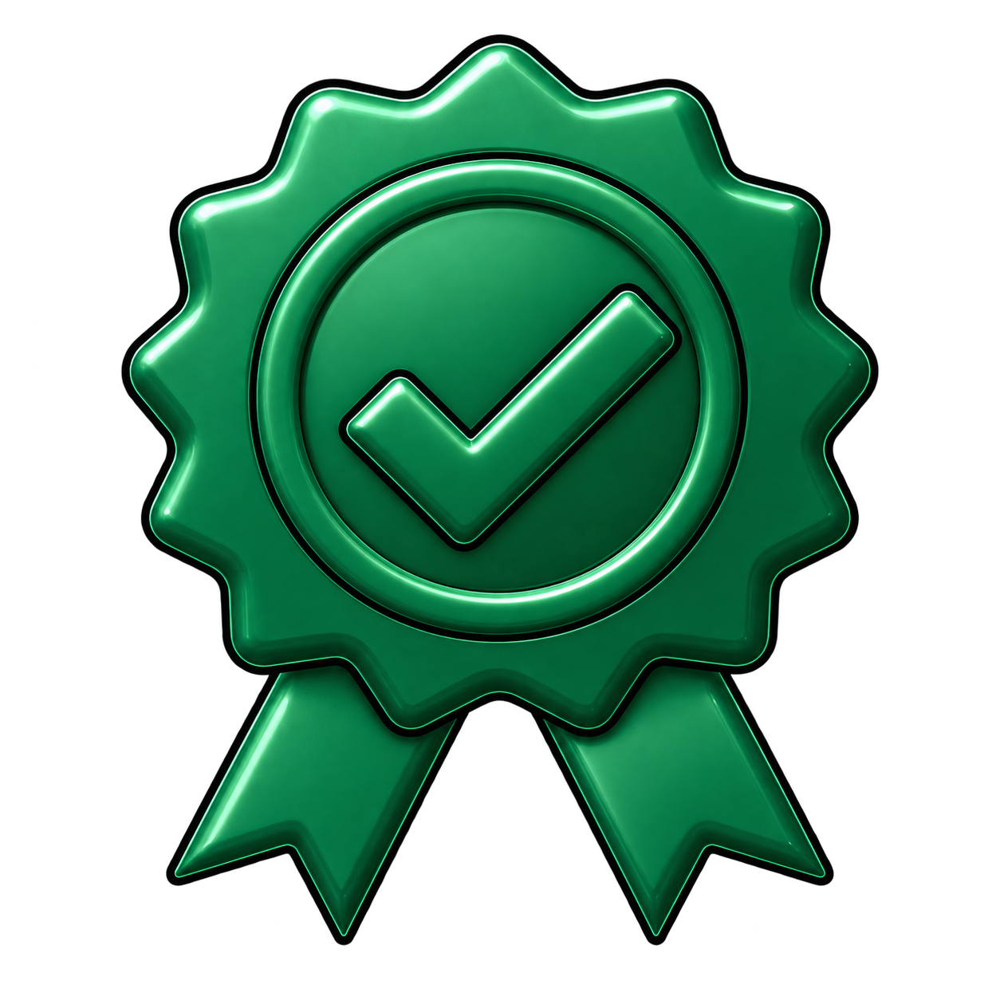
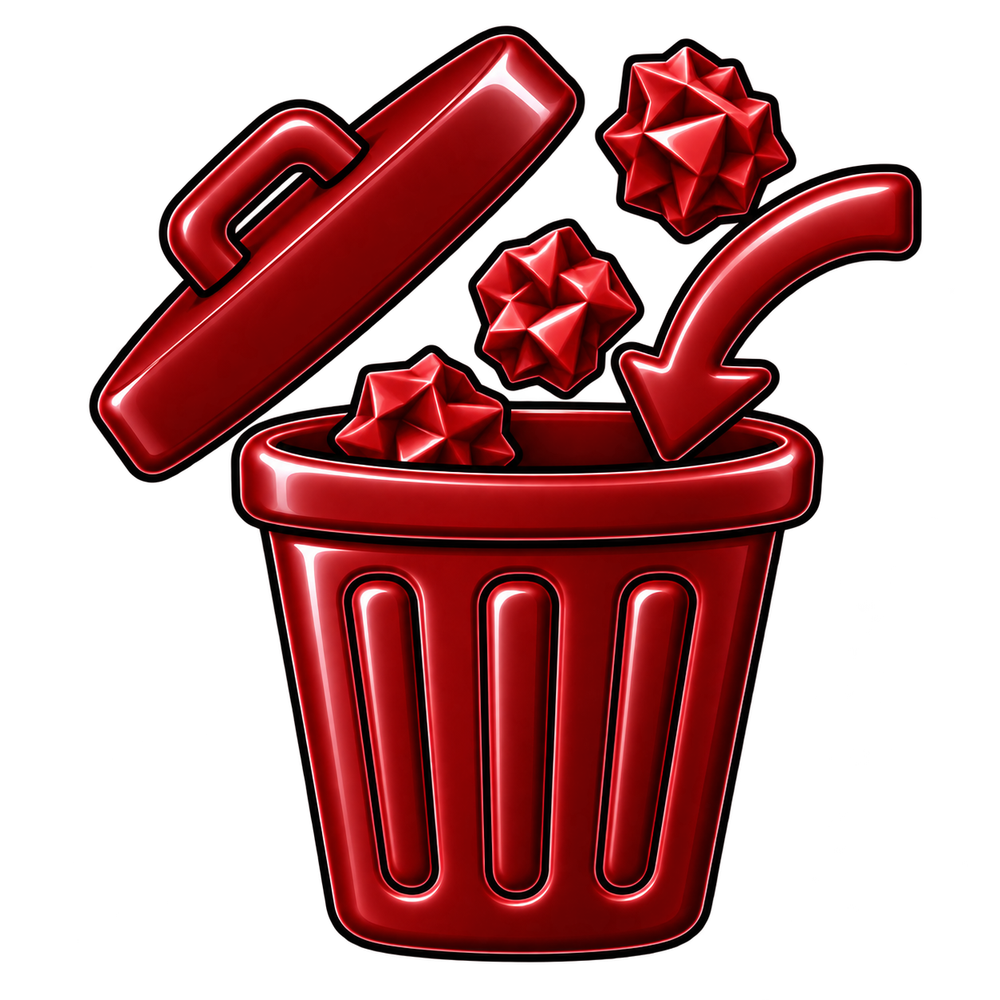
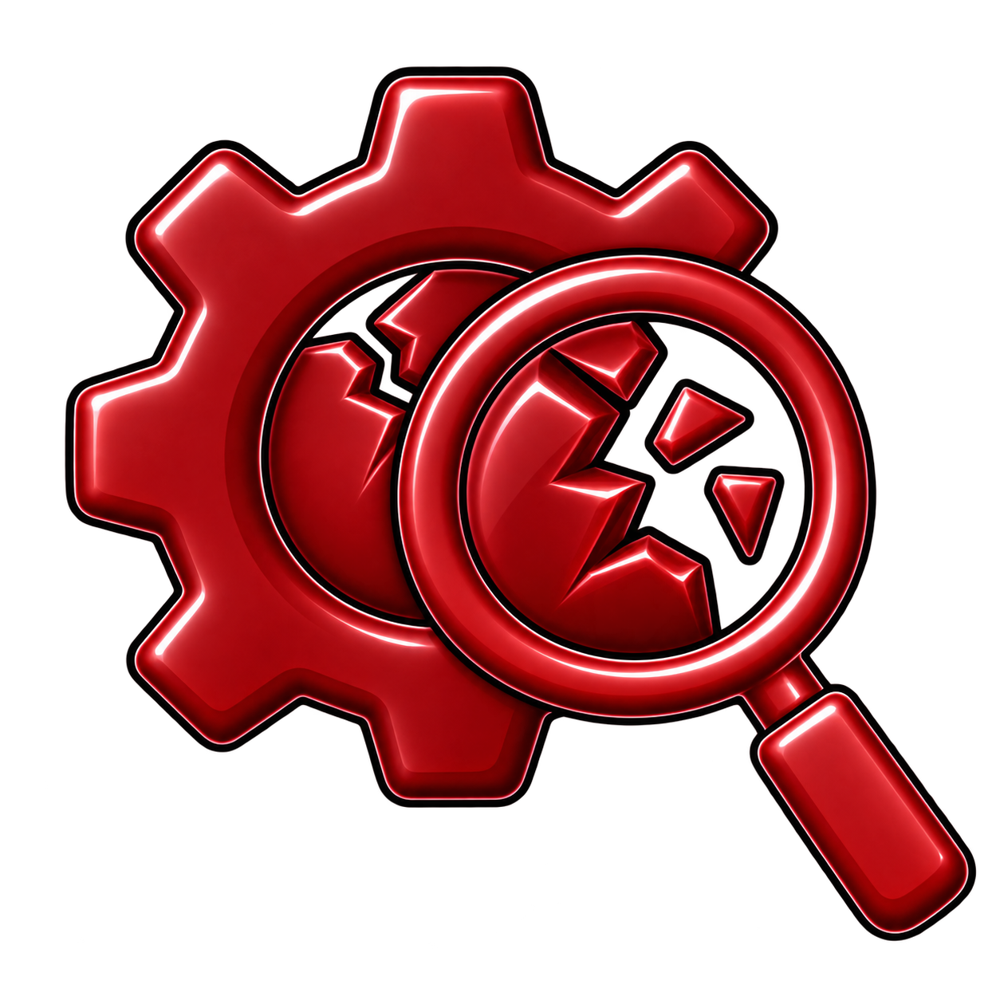
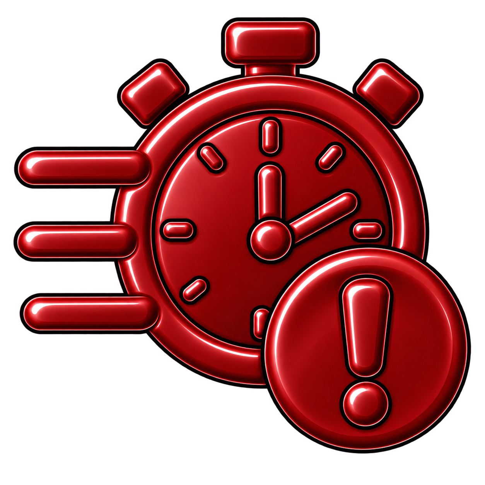
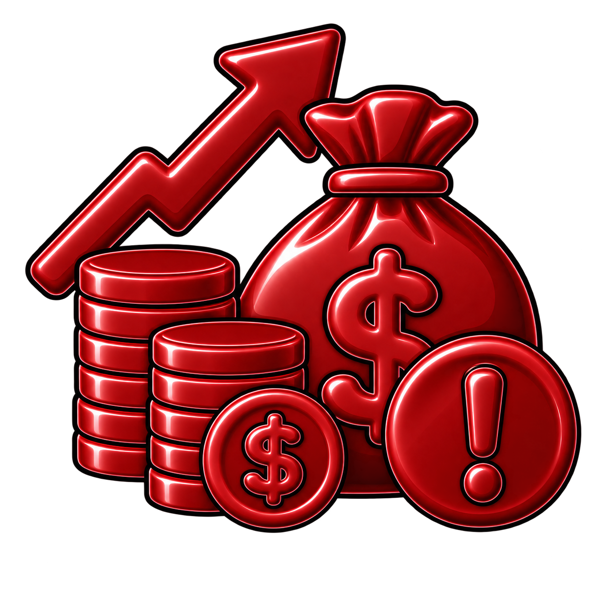
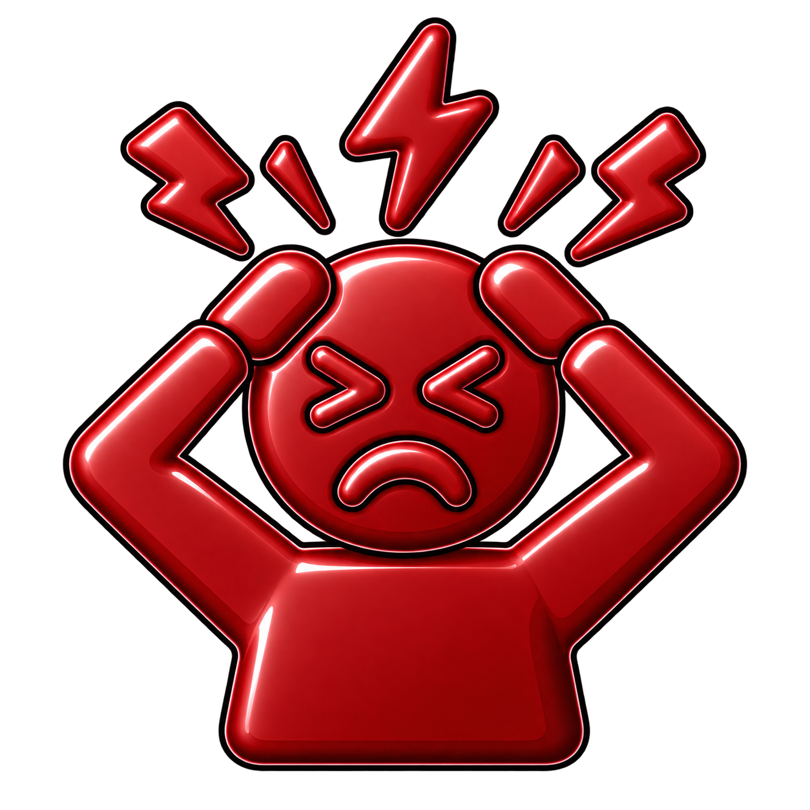

Improvement Is More Than a Better Local Result
Organizations make changes constantly: processes are modified, controls are added, suppliers are selected, systems are implemented, and investments are approved. Each decision promises some form of improvement. Yet a decision can reduce cost while increasing defects, improve control while creating delay, or increase speed while adding risk.
The Improvement Compass provides a common language for seeing the whole consequence. It defines six forms of value creation—More, Better, Faster, Cheaper, Safer, and Happier—and balances them against six forms of organizational friction: Waste, Defects, Delays, Excess Cost, Risk, and Frustration.
The objective is not to maximize one outcome at the expense of everything else. The objective is net improvement: a better organization as a whole.
Value Creation and Organizational Friction
Improvement requires looking at both sides of a decision: the value it creates and the friction it introduces, reduces, or moves elsewhere.
Six ways an organization can create value.
Increase useful output, capacity, reach, or value.

Improve quality, effectiveness, reliability, or experience.
Reduce time, delay, waiting, or unnecessary motion.
Reduce total cost without shifting hidden costs elsewhere.
Reduce risk to people, customers, assets, and the organization.
Reduce avoidable frustration and improve the human experience.
Six forms of friction that can consume or undermine value.

Consume resources, effort, materials, or capacity without creating sufficient value.

Create errors, failures, rework, or quality problems that consume additional resources and reduce effectiveness.

Consume time through waiting, bottlenecks, unnecessary handoffs, or slow decisions and flow.

Consume more money or resources than necessary to achieve the intended result.
Create unmanaged exposure to harm involving people, customers, assets, reputation, or the organization.

Create avoidable difficulty, confusion, complexity, or inconvenience for employees, customers, or others.
Value. Friction. Tradeoffs. Net Improvement.
The framework turns a broad idea into a repeatable way to examine a proposed change.

The Decision Framework
Evaluate the value a decision could create, the friction it could introduce, the magnitude and duration of the tradeoffs, and whether the overall result represents net improvement.

The Decision Funnel
Move a proposed decision through value creation, organizational friction, tradeoff analysis, and the final net-improvement test before proceeding, revising, or rejecting it.
What the Book Explores
A selective map of the ideas—not a substitute for the journey through the book.
Understanding Improvement
Define improvement broadly enough to include quality, speed, cost, safety, experience, and the friction created along the way.
The Hidden Cost of Friction
Learn to recognize Waste, Defects, Delays, Excess Cost, Risk, and Frustration that organizations often normalize.
The Principle of Net Improvement
Evaluate tradeoffs across the whole system rather than declaring success from one favorable metric.
The MBFC + SH Decision Test
Use one practical question to challenge whether a proposed change truly moves the organization in a better direction.
Building a Culture of Improvement
Move the framework from individual decisions into meetings, audits, measurement, and everyday organizational habits.
Putting the Framework to Work
Apply the ideas to policies, controls, capital investments, supplier choices, processes, and recurring operational decisions.
Put the ideas to work.
These are the kinds of questions the book is designed to make easier to ask—and harder to ignore.
- What value are we actually trying to create?
- What new friction could this decision introduce?
- Are we reducing cost—or shifting cost somewhere less visible?
- Who benefits, who absorbs the burden, and for how long?
- What would tell us that the change is not working as expected?
- Considering the whole system, does this create net improvement?
The Improvement Compass
Leaders, managers, supervisors, operations teams, improvement professionals, and anyone responsible for changing how work gets done. The framework is intentionally methodology-neutral: it can complement Lean, Six Sigma, safety, quality, strategic planning, project management, and other specialized disciplines.
The books teach the system. The website helps you use it.
Practical appendices from The Improvement Compass are being reworked for standalone use through the MBFC + SH Resource Center.
View Book 1 Resources